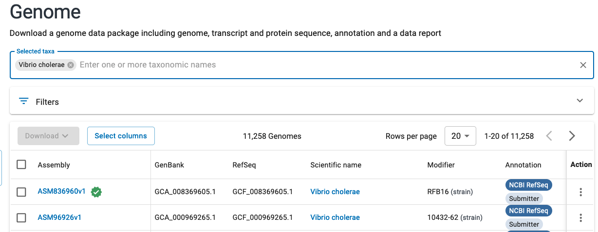
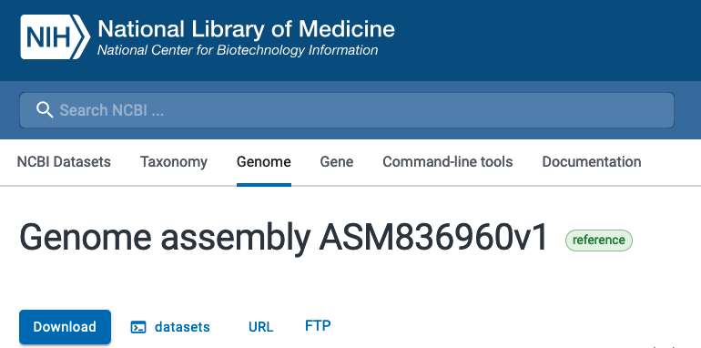

Week 4: Genome Analytics
Section Links
Explore the use of NCBI Datasets CLI
Generate a module that downloads a genome using the NCBI Datasets CLI
Refactor your workflow to incorporate downloading a genome as the first step
Make a conda environment with pycirclize and ipykernel
Generate a Circos plot of one of your new annotated genome using the GFF
Week 4 Overview
For the first weeks, you were provided pre-downloaded reference genomes to use in your pipeline. Oftentimes, you will want to include downloading any files inside your pipeline to enable it to run end-to-end without any manual intervention. For this week, you will make use of the NCBI datasets CLI tool to download a genome of your choice and automatically process it using the workflow you have previously developed.
Objectives
Explore and navigate through the NCBI genomes resource
Utilize the NCBI Datasets CLI tool and incorporate it into your workflow
Set up a jupyter notebook to work in VSCode with a specific Conda environment
Generate a Circos plot of your newly annotated genome
Explore the use of NCBI Datasets CLI
The NCBI Datasets CLI is the recommended means for accessing the comprehensive information provided by the NCBI. The NCBI has packaged together a web interface, API, and command line tool that enables retrieving comprehensive information about genomes, genes, and taxonomies. This tool makes it incredibly simple to download one or many genomes and any available associated annotation information desired.
- Go to the NCBI genomes website (https://www.ncbi.nlm.nih.gov/home/genomes/) and search for a microbe of your choice. Browse the search results and explore all of the information available to you and provided by the NCBI.
Generate a module that downloads a genome using the NCBI Datasets CLI
Navigate to the genomes section for your microbe of interest and if available, choose the assembly marked as “reference genome” for your chosen organism. The representative genome will be marked with a star as seen below:

If you look at the genome assembly page for your chosen genome, you should see
an option for download using datasets. If you click on that option, you will
be provided a template command for how to use the CLI tool to download various
files associated with the chosen assembly.

Make sure to note the command as well as the particular assembly name for the genome (GCF). You will use this command and modify it so that you can provide any valid genome assembly (GCF) and to download only the genomic FASTA file.
Copy your previous workflow
main.nfto a new file calledcomplete.nf. This will be the new workflow that you will be modifying for this week.Copy the provided CSV (/projectnb/bf528/materials/project-0-genome-analytics/ncbi_samplesheet.csv) and add the genome you chose and its associated genome accession (GCF_*) listed in the datasets command.
Create a channel in your nextflow workflow
complete.nfcontaining information found by reading from the CSV you created.Read the manual page for running the datasets command.
Complete the provided NCBI datasets module by using the correct command for downloading files using the
datasets download genomecommand. You only need to download the genome FASTAS and do not need the other files.By default, the NCBI datasets command will download a .zip file containing several nested directories containing metadata files and the requested files. Include a second shell command after your NCBI datasets command that unzips the file.
Examine the provided output for this module and note how it contains a tuple with the metadata value passed in the input, and the
.fnafile for your selected accession. Remember that we can use the * glob pattern matching syntax in the output to flexibly capture different files and ** to recurse through directories. Note that because of the staging directory strategy, the paths for this file are all relative.
Refactor your workflow to incorporate downloading a genome as the first step
After you have successfully completed the module that will run the NCBI Datasets
CLI command and download your requested genome FASTA, you will need to incorporate
this process into your workflow complete.nf.
Add your NCBI Datasets CLI module into your workflow
complete.nfand have your pipeline use the outputs of this module directly. When run from the beginning, your workflow should seamlessly download the requested genome and perform the previously described processes (Prokka, GC content, etc.). You should accomplish this by making it so you can pass the outputs of your NCBI Datasets CLI process directly to the downstream processes in your workflowcomplete.nf. Remember to make sure that the outputs of your NCBI datasets CLI module match what is expected by the other modules’ inputs.Remember that we can use the
NAME_OF_PROCESS.outcommand to pass the outputs of a specific process to another. Ensure that the output channels match what is expected by the inputs for the other processes.
Make a conda environment with pycirclize and ipykernel
We will often analyse the results of our pipelines extensively in a jupyter notebook as it allows us to seamlessly execute code, create visualizations, and provide text annotations in the same place. With larger projects and complicated analyses, we may often require many different software packages while working in our notebooks and it is incredibly easy for these notebooks to become unorganized jumbled messes of different packages. In the interest of reproducibility, we will directly create a conda environment that contains all of the software we require for our notebooks in the style we have been using in this class. This way if we ever needed to share the work done in these notebooks, we can simply provide the environment and the actual notebook separately.
With the Jupyter extension in VSCode, we can directly work with jupyter notebooks and also run these notebooks with specific conda environments active. The IPyKernel package will allow us to launch a python process as a kernel and execute code against a jupyter notebook. Kernels are simply programming language specific processes that run independently and interact with jupyter.
Make a YML file in
envs/according to the conventions we’ve talked about that will create a conda environment with the latest versions ofpycirclizeandipykernelinstalled. You may name it whatever is easy for you to remember.Use the
conda env create -f envs/<name_of_yml_from_above>.ymlto actually create this environment.In VSCode, use the command palette to create a new jupyter notebook. Go to the top right where it says
Select Kerneland choose thePython Environments...option and find the conda environment you just created. This will enable you to utilize all of the software packages installed within that environment in this notebook.
Generate a Circos plot of one of your new annotated genome using the GFF
If you were in BF591, we discussed briefly the purpose and usage of Circos plots. If not, you may look here for a short discussion on these circular layout plots. While they can be difficult to interpret when overlaying quantitative data, we will be making a Circos plot of the genome and genome annotations generated by Prokka on your genome of choice. A Circos plot works well here because most bacterial genomes are circular and we are only using it to illustrate the structure of the genome and the organization of the genes.
- In your notebook with your newly created conda environment as the kernel, use pycirclize and the GFF you generated from one genome to create a Circos plot of the genome and its annotations. Hint: You can simply copy the example code from pycirclize to make this plot.
Week 4 Detailed Tasks Summary
Choose a prokaryotic genome and use the NCBI genomes site to retrieve the NCBI datasets CLI command to download a genome fasta file by specifying an assembly.
Create a CSV containing the scientific name of your microbe and the assembly you wish to download from above
Generate a nextflow module that will run the NCBI datasets CLI to download a genome of your choice
Create a channel containing the information from the CSV and run the NCBI datasets CLI module using this channel
Modify your
complete.nfto use the outputs from your NCBI datasets CLI command to run the full pipelineCreate a conda environment containing the latest versions of ipykernel and pycirclize
Generate a Circos plot in a jupyter notebook using the GFF created by Prokka to create a simple visualization of the genome and genome annotations for your chosen microbe.